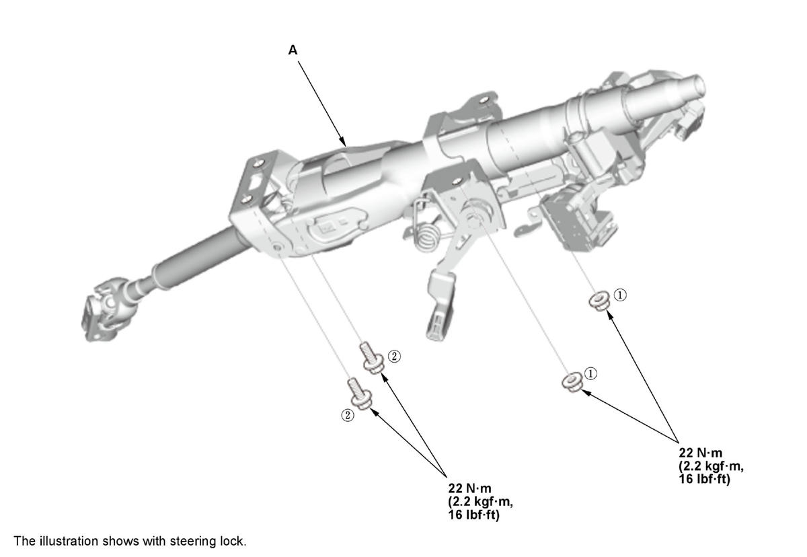
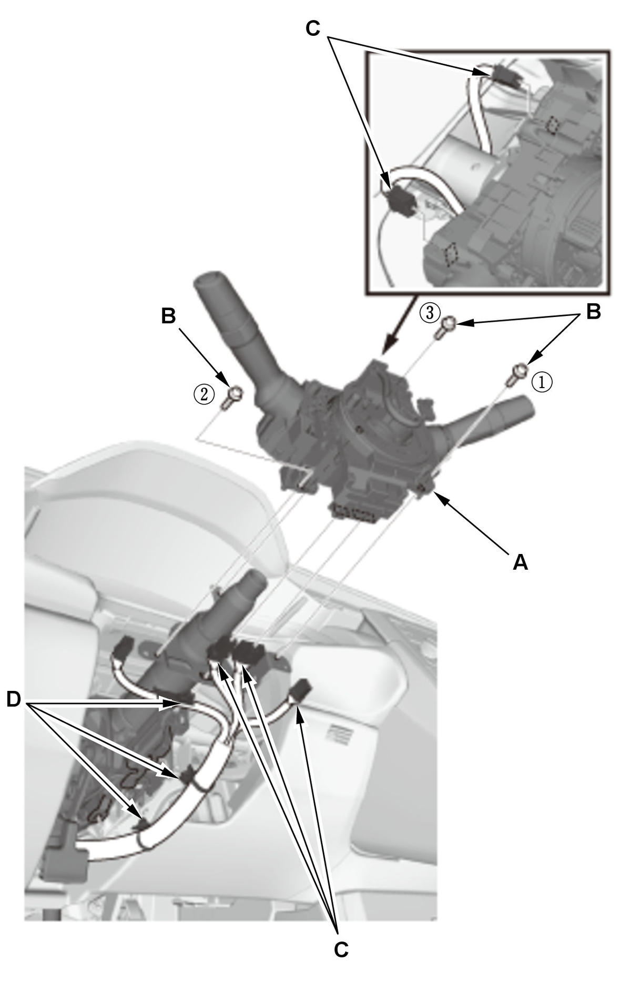
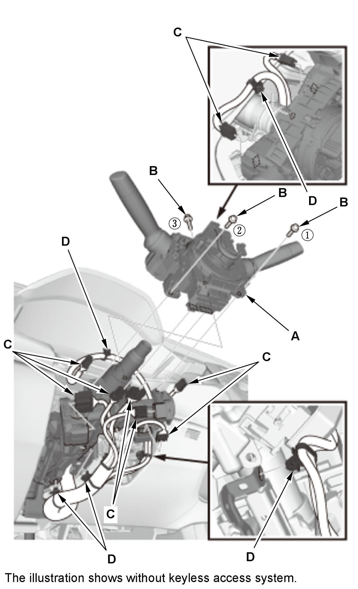

Steering Column Removal and Installation: Installation
NOTE:
- SRS components are located in this area. Review the SRS component locations , and the precautions and procedures before doing repairs or service.
- Do not release the lock lever until the steering column is installed. If the lock lever is released before installation, adjust the steering column after installation.
- Steering Column - Install
1. Install the steering column (A).

Courtesy of HONDA, U.S.A., INC.2. Loosely install the attaching nuts and bolts.
3. Tighten the attaching nuts and bolts to the specified torque in the numbered sequence shown.
- Steering Joint - Connect
- Combination Switch Body Assembly/Wire Harness - Install

Courtesy of HONDA, U.S.A., INC.
Courtesy of HONDA, U.S.A., INC.1. Install the combination switch body assembly (A). 2. Tighten the screws (B) in the numbered sequence shown.
3. Connect the connectors (C) and install the harness clips (D).
- Column Cover - Install
- Steering Wheel - Install
- Driver's Airbag - Install
- 12 Volt Battery Terminal - Connect
- Steering - Check
After installation, check these items:
- Start the engine, allow it to idle, and turn the steering wheel from lock to lock several times.
- Check the steering wheel spoke angle. If steering spoke angles to the right and left are not equal (steering wheel and rack are not centered), correct the engagement of the joint/pinion shaft splines.
- Wheel Alignment - Check
- VSA Sensor Neutral Position - Memorize